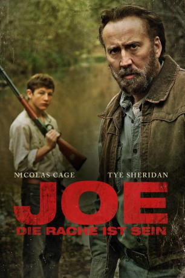

#2301 Joe - Die Rache ist sein
Alternativ: Joe
 
 IMDB-Wertung: 6.9 / 10
IMDB-Wertung: 6.9 / 10  Metascore: 74
Metascore: 74 
Der ehemalige Verbrecher Joe lebt einfach so in seinen ungeordneten Alltag hinein, betrinkt sich regelmäßig und versucht, nicht noch einmal in Schwierigkeiten zu geraten. Er nimmt einen Job in der Forstwirtschaft an und fällt einen Baum nach dem anderen. Doch eine Begegnung reißt ihn aus seinem täglichen Trott: Joe trifft den 15-jährigen Gary, der gerne für und mit Joe im Wald arbeiten möchte. Nicht begeistert über die Gesellschaft, aber empfänglich für die Hilfe, nimmt Joe den jungen Helfer unter seine Fittiche. So entdecken der ältere und der junge Mann eine gewisse Seelenverwandtschaft, die Joe vor eine unangenehme Situation stellt. Denn Garys Vater Wade ist gewalttätig und vernachlässigt seinen Sohn, den Joe auf keinen Fall verrohen sehen will.
Jahr: 2013
Dauer: 117 Minuten
FSK: 16
Land: USA Studio: LionsgateTonspuren: DTS - ,
Untertitel: Deutsch,
Auflösung: 1080p (1920x816) Größe: 7137 MB
Genre: Drama
Regisseur: David Gordon Green
Drehbuch: Gary Hawkins, Larry Brown
Soundtrack: Jeff McIlwain, David Wingo
Darsteller:
 Nicolas Cage als Joe
Nicolas Cage als Joe Tye Sheridan als Gary
Tye Sheridan als Gary Ronnie Gene Blevins als Willie-Russell
Ronnie Gene Blevins als Willie-Russell- Adriene Mishler als Connie
 Sue Rock als Merle
Sue Rock als Merle Heather Kafka als Lacy
Heather Kafka als Lacy- Brenda Isaacs Booth als Mother
- Anna Niemtschk als Dorothy
- Aaron Spivey-Sorrells als Sammy
- John Daws als John Coleman
- Lico Reyes als Blind George
- Lazaro Solares als Henry
- Elbert Hill Jr. als Wino
- Jonny Mars als Young Deputy
- Jon Bonzor als Deputy
- Erin Elizabeth Reed als Cathy
- Dana Freitag als Sue
- Robert Johnson als Cop #1 , uncredited
- Kevin Kinkade als Brothel Patron , uncredited
- Ulysses Lopez als Cop , uncredited
- Gary Poulter als Wade a.k.a. G-Daawg
- Brian Mays als Junior
- Aj Wilson McPhaul als Earl
- Elbert Hill III als Shorty
- Milton Fountain als Milton
- Roderick L. Polk als Roscoe
- Kay Epperson als Stacy
- Howard G. Hershman als Flo
- Marie Jackson Cooper als Ancient Woman
- Effie J. Calico als Housewife
- Bob Olsen als Farmer
- Christopher England als Chris
- Lynette Walden als Charlotte
- Mark Whigham als Tomato Face a.k.a. Cokie
- James E. Morris III als Cop , uncredited
- Henry Edwards als 2nd Cop , uncredited
- Kayla Eiriksson-Lopez als Brothel / Working Girl , uncredited
- Spiral Jackson als Farmer , uncredited
- Eric Leikam als Cop , uncredited
- Nina Madore-Mitchell als Brothel Working Girl , uncredited
- Tana Morris als Cop , uncredited
Datei: X:\2013(I-M)\Joe - Die Rache ist sein (2013, FSK16, 1920x816).mkv seit 27.10.2015
Festplatte: HD 2013(I-Z)-2014(A-Z)
 Es gibt insgesamt 89 Filme in der Gruppe '2013(I-M)'
Es gibt insgesamt 89 Filme in der Gruppe '2013(I-M)'